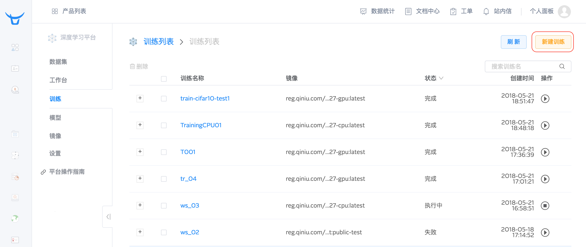
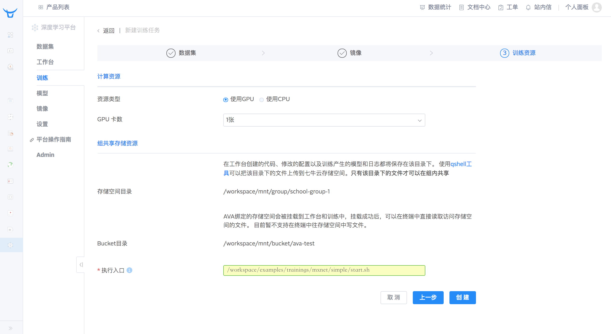
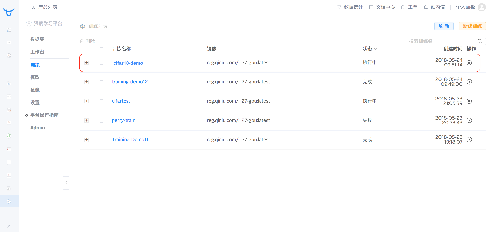
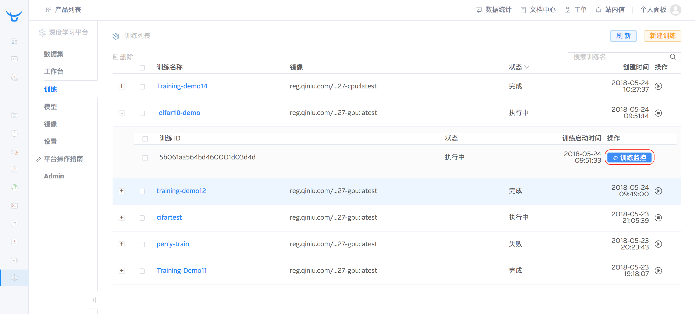

训练管理
启动训练
使用 AVA 平台, 可以训练出满足您需求的模型, 训练完成后, 可以发布出来进行调用 (发布的功能正在紧张开发中).
注意： 单个训练资源占用的最大时间为 72 小时, 运行时间超过 72 小时的训练会被自动停止.
而训练一个模型, 一般需要以下 3 步.

- 选择数据集
- 选择镜像
- 选择训练资源
下面讲介绍如何使用 AVA 平台提供的公开数据集 CIFAR-10 和公开镜像来训练一个模型.
在左侧栏点击 "训练" 进入到训练模块, 点击 "新建训练" 就可以创建一个训练:

输入训练名称 "CIFAR-10-demo" 和描述 (可选) "This is a training demo for CIFAR-10":
选择数据集
AVA 平台提供了很多公开数据集供用户使用, 在数据集模块的公开数据集 tab 就可以找到数据集名称为 "cifar10" 的数据集. CIFAR-10 数据集所包含的内容, 请参考官网.

训练模型的框架比较多, 目前 AVA 平台能支持的训练框架包括 Caffe 和 MXNet. 使用这些框架进行模型训练时, 使用的数据集一般是需要提前生成为特定的格式, 例如, Caffe 需要 LMDB 格式的数据, 而 MXNet 需要 RecordIO 格式的数据, 当然也可以使用原图格式.
所以, 在开始训练之前, 需要把数据集格式化成需要的格式. 在此示例中, 我们将使用平台提供的 MXNet 的公开镜像, 所以这里数据集需要格式化为 RecordIO 的数据. 平台已经把 CIFAR-10 的这 50000 条数据按照比例格式化为 RecordIO 的训练集 (40000 条) 和验证集 (10000). 数据格式化成功完成后, 就可以在训练中使用了.

在训练模型时, 我们一般需要为这个训练选择 "训练集" 和 "验证集", 训练集和验证集可以分别来自于不同的数据集的格式化数据. 在本示例中, 我们将选择 3.1 中的公开数据集 "CIFAR-10" 格式化的 RecordIO 的数据, 如下图选中百分比为 80% 的这条格式化数据作为训练集:

一般情况, 我们会把一个数据集拆分成 2 部分, 一部分作为训练集, 一部分作为验证集, 所以当您选择 CIFAR-10 的数据集中那条百分比为 80% 的格式化数据时, 系统会提示您是否要选择同时格式化 20% 的格式化数据作为验证集. 点击 "确定" 按钮, 则选中了训练需要的训练集和验证集:

选择镜像
镜像一般包含训练的代码, 以及 AVA 平台需要的一些 SDK 的代码, 用户可以自己构建镜像, 也可以使用公开镜像. AVA 平台提供了很多公开镜像供用户使用, 在本示例中, 对于 CIFAR-10 的数据集, 我们将使用 MXNet 的官方示例 ResNet50 网络训练, 您可以在镜像模块的公开镜像 tab 找到 "ava-mxnet" 的镜像, 请选择版本为 "py27-cuda80-cudnn6" 的镜像.
TODO: 图需更新

点击 "下一步" , 进入到选择训练资源
选择训练资源
在训练资源页面, 用户可以选择 GPU 资源或 CPU 资源, 在这里可以选择 GPU 资源, 目前仅提供 1 张 GPU 资源. 执行入口填入的是指定执行的主代码文件, 必填, 这里填入的是
/workspace/examples/trainings/MXNet/simple/start.sh

点击 "创建" 按钮, 可以看到这个训练就处于 "创建中" , 分配好资源后, 就可以执行训练了.

训练执行过程中, 您可以在平台中查看训练监控, 查看训练日志和训练产生的模型.
查看训练监控
在训练列表中, 找到你刚才创建的训练 "cifar10-demo" ,然后点击 "训练监控" .

即可查看这个训练的 accuracy\loss\learning rate 曲线图.

查看训练日志
对于正在执行中的训练, 或者已经完成的训练, 用户都可以查看训练的日志. 现在训练的日志是存储在组共享存储空间的文件/workspace/mnt/group/qiniu-group-1/avatest/run/train_cifar10-demo_out.log 中.
查看训练日志, 需要创建一个工作台, 启动工作台中的 Terminal, 然后通过 terminal 进入到组共享存储空间去查看日志纪录. 工作台的详细功能, 请查询工作台管理.
停止训练
对于正在执行中的训练, 如果用户想要终止训练, 那么可以通过点击 "终止训练" 的按钮来终止这个训练. 训练终止后, 这个训练占用的实例资源会被释放, 正在运行的训练会停止, 保存在组共享存储资源上的数据不会丢失.

重启训练
对于已经完成或者提前终止的训练, 如果用户想要重启这个训练, 则可以点击 "启动训练" 的按钮再次启动这个训练.